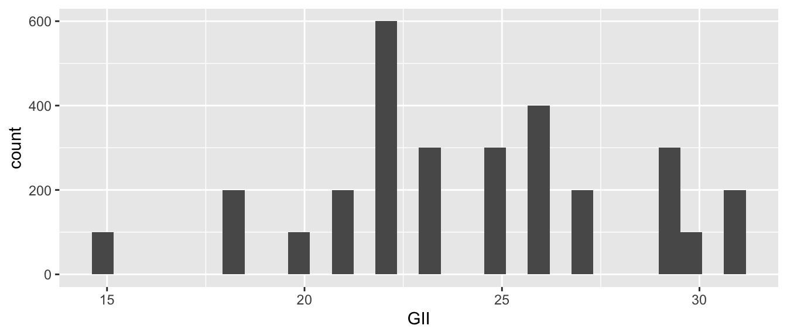
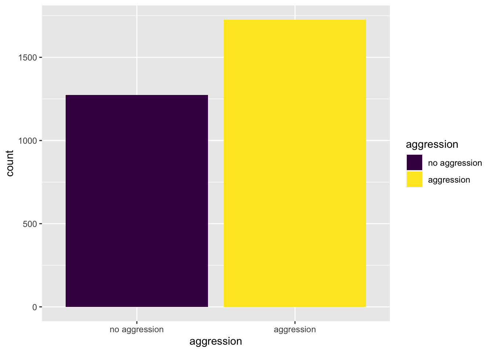
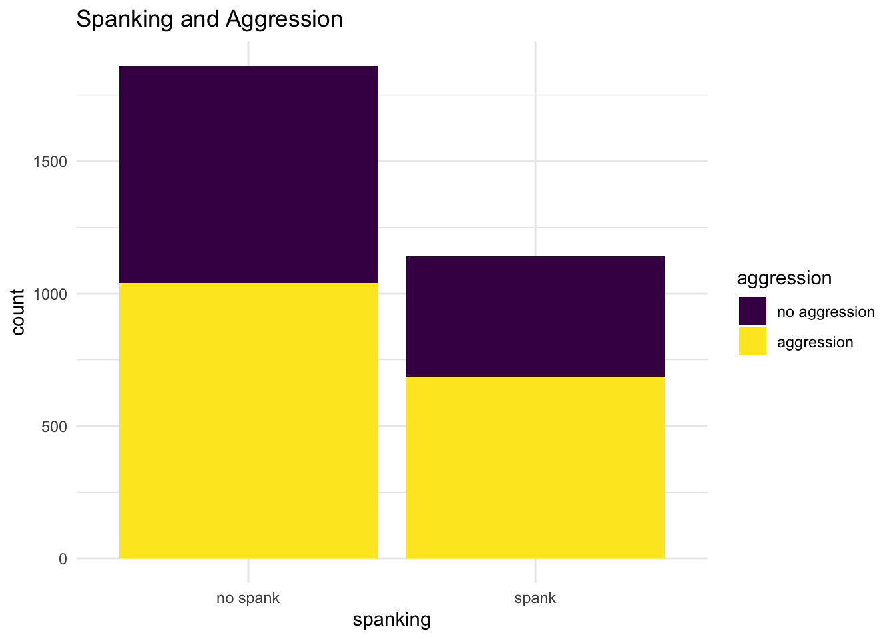

library(ggplot2) # beautiful graphs
library(ggthemes) # nice themes for ggplot2A Quick Introduction To ggplot2
Why Use ggplot?1
A great deal of data analysis and visualization involves the same core set of steps: get some data, clean it up a little, run some descriptive statistics, run some bivariate statistics, create a graph or a visualization. ggplot2 can be an important part of a replicable, automated, documented workflow for complex projects.
\[\text{have a question} \rightarrow \text{get data} \rightarrow \text{process and clean data} \rightarrow\] \[\text{visualize data} \rightarrow \text{analyze data} \rightarrow \text{make conclusions}\]
Given the fact that we often want to apply the same core set of tasks to new questions and new data, there are ways to overcome the steep learning curve and learn a replicable set of commands that can be applied to problem after problem.
The same 5 to 10 lines of ggplot2 code can often be tweaked over and over again for multiple projects.
The Essential Idea Of ggplot Is Simple
There are 3 essential elements to any ggplot call:
- A reference to the data you are using.
- An aesthetic that tells
ggplotwhich variables are being mapped to the x axis, y axis, (and often other attributes of the graph, such as the color fill). Intuitively, the aesthetic can be thought of as what you are graphing. - A geom or geometry that tells ggplot about the basic structure of the graph. Intuitively, the geom can be thought of as how you are graphing it.
You can also add other options, such as a graph title, axis labels and overall theme for the graph.
Get Started
Call Libraries
Get Data
load("./simulate-data/MICSsimulated.RData") # data in R formatSome Examples2
One Continuous Variable
# anything that starts with a '#' is a comment
ggplot(MICSsimulated, # the data I am using
aes(x = GII)) + # the variable I am using
geom_histogram() # how I am graphing it`stat_bin()` using `bins = 30`. Pick better value with `binwidth`.
One Categorical Variable3
Make sure R knows this is a categorical variable.
MICSsimulated$aggression <-
factor(MICSsimulated$aggression, # original numeric variable
levels = c(0, 1),
labels = c("no aggression", "aggression"),
ordered = TRUE) # whether order mattersggplot(MICSsimulated, # the data I am using
aes(x = aggression,
fill = aggression)) + # the variable I am using
geom_bar() # how I am graphing it
Add Some Options4
Make sure R knows this is a categorical variable.
MICSsimulated$cd1 <-
factor(MICSsimulated$cd1, # original numeric variable
levels = c(0, 1),
labels = c("no spank", "spank"),
ordered = TRUE) # whether order mattersggplot(MICSsimulated, # the data I am using
aes(x = cd1,
fill = aggression)) + # the variables I am using
geom_bar() + # graph with bars
labs(title = "Spanking and Aggression",
x = "spanking",
y = "count") +
theme_minimal() # theme
Footnotes
More information can be found here: https://agrogan1.github.io/R/introduction-to-ggplot2/introduction-to-ggplot2.html↩︎
Changing variables from factor to numeric (e.g.
aes(x = as.numeric(outcome))), and vice versa can sometimes be a simple solution that solves a lot of problems when you are trying to graph your variables.↩︎Notice how the use of
fillin the aesthetic generates a legend.↩︎Notice how use of
fillgoverns both the use of color in the graph below, as well as the legend that is produced in the graph.↩︎